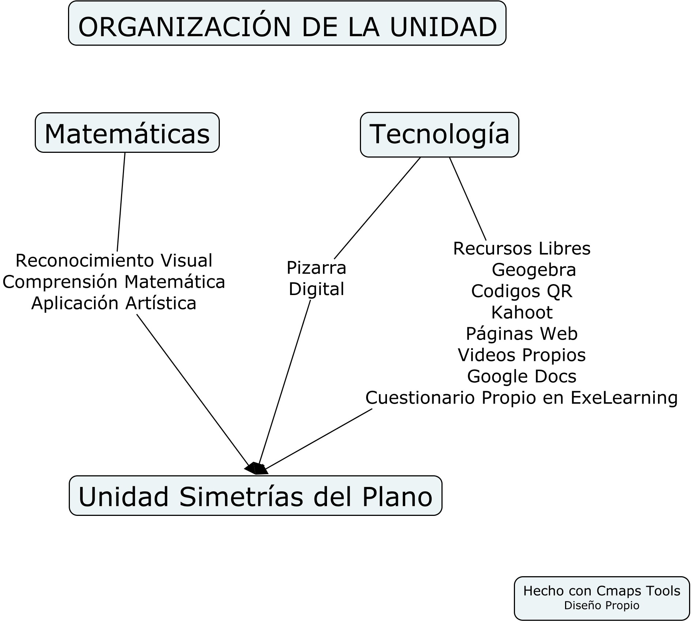
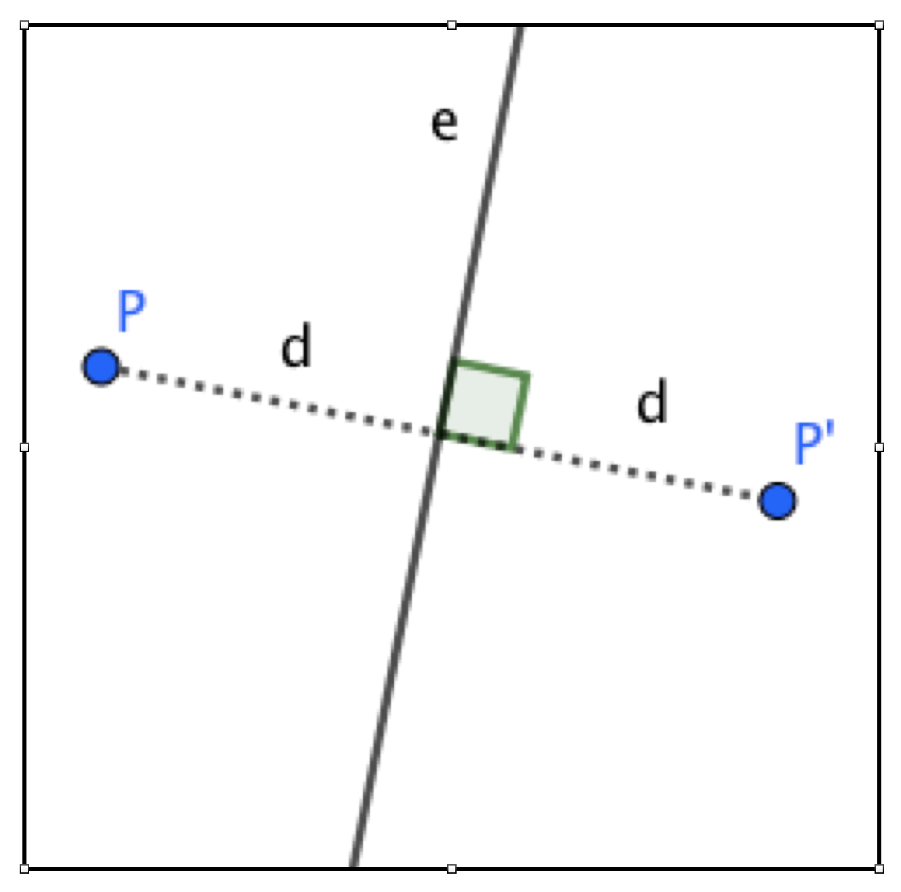

Actividades Unidad Simetrias
PRESENTACION
Observación: Para facilitar la lectura, se utiliza el género masculino en referencia a niños y niñas, alumnos y alumnas.
Título: Las simetrías del plano en 6º de E. Primaria
Etapa educativa
La unidad que se muestra a continuación está dirigida a 6º de E. Primaria.
Hemos elegido este curso para que los estudiantes tengan habilidad en el manejo de programas de geometría dinámica, aunque sería posible utilizar las actividades más sencillas en cursos inferiores, desde 3º E. Primaria, donde el diseño curricular de la Comunidad Valenciana ya propone, en matemáticas, trabajar simetría utilizando “programas informáticos de geometría dinámica”.
Planteamiento presencial
Su planteamiento y desarrollo se podría realizar desde un entorno virtual, si es posible compartir pantalla con el ordenador central para dar visibilidad al trabajo de cada alumno. La propuesta se basa, prácticamente es su totalidad, en la utilización de ejercicios de resolución dinámica, a través del ordenador o de una tableta; por ello, cada niño puede trabajar de manera autónoma y quien dirige la sesión seleccionaría estudiantes para que mostraran su pantalla y así generar discusión con el resto de alumnos del aula. No obstante, para primaria el trabajo virtual, en esta unidad que presento, creemos que es menos eficaz que la situación presencial.
Por ello, nosotros hacemos aquí una propuesta presencial, en la que los niños dispondrían de ordenadores o tabletas con la unidad de enseñanza y el material necesario para realizar las actividades propuestas. De esta manera, podríamos servirnos también, si estuviera disponible en el aula, de la pizarra digital para proyectar ejercicios y las respuestas de los estudiantes. Así se favorece la colaboración entre los niños del aula en la resolución dinámica de las tareas planteadas. Asimismo, al ser una unidad de enseñanza presencial, el profesor puede observar en directo y de manera rápida las posibles dificultades de los niños con el software o con los ejercicios en sí.
Justificación de la etapa elegida
Mi formación es de Maestro de Primaria. Por ello me he centrado en Primaria y, dentro de esta etapa, en 6º curso, para que los estudiantes puedan hacer un uso fluido de la tecnología, tal como he indicado anteriormente.
Justificación del tema elegido
En el diseño curricular de la Comunidad Valenciana para Primaria (Generalitat Valenciana, 2014, Decreto 108/2014), desde 3º de Primaria, aparece en cada curso alguna referencia a la simetría como objeto de estudio y/o en los criterios de evaluación en el área de matemáticas. Y no sólo en esta área, sino que también es una constante a lo largo de casi todos los cursos en el área de expresión plástica, donde se menciona, incluso en 1º de Primaria.
Objetivos de la unidad
En la implementación de la LOMCE en la Comunitat Valenciana, para 6º de primaria, en los contenidos de matemáticas del bloque 4, geometría, se especifica: “Regularidades y simetría (de figuras planas). Reconocimiento de regularidades”. Y en los criterios de evaluación de este bloque se especifica la utilización de programas de geometría dinámica.
Objetivo matemático
Nos proponemos plantear una secuencia de actividades que introduzca la visualización de figuras simétricas y de la simetría axial (respecto un eje) de una figura, así como descubrir y utilizar las propiedades que definen esta transformación (equidistancia al eje de puntos simétricos y perpendicularidad al eje de los segmentos que unen puntos simétricos). Los objetivos específicos son:
- Identificación visual de figuras simétricas y de ejes de simetría (de una figura y entre figuras simétricas).
- Descubrimiento de las propiedades matemáticas que definen la simetría.
- Utilización de esas propiedades matemáticas para identificar y realizar simetrías.
- Aplicación artística: Utilización de simetrías para elaborar frisos y rosetones.
Objetivo tecnológico
Desde el punto de vista tecnológico, un objetivo ha sido emplear recursos libres, tanto por la aportación que puedan suponer como facilitadores de la presentación del contenido matemático, como para facilitar a los niños el conocimiento de estos recursos e incrementar su destreza en su utilización. Los objetivos específicos son:
Incorporar un software libre de geometría dinámica (GeoGebra) como base para desarrollar las actividades.
Usar códigos QR como método para enlazar con una página con información propia (cuestionario).
Usar Kahoot como soporte de un cuestionario de repaso y/o evaluación del aprendizaje de los estudiantes.
Aprovechar la información disponible en internet mediante enlaces a páginas web con recursos interactivos procedentes en la unidad.
Presentar información mediante vídeos de elaboración propia.
Fomentar el trabajo colaborativo planteando el uso de Google Docs para la realización conjunta por grupos de niños de un documento resumen final.
Organización de la Unidad Didáctica
A continuación mostramos un esquema, realizado con Cmaps Tools, en la que están presentes los elementos que se han tenido en cuenta para la realización de la unidad didáctica sobre simetrías del plano.

Recursos utilizados en cada actividad de la unidad didáctica
- Actividad 01: Página Web
- Actividad 02: Pizarra Digital
- Actividad 03: Página Web
- Actividad 04: Video Propio
- Actividad 05: Geogebra
- Actividad 06: Geogebra
- Actividad 07: Geogebra
- Actividad 08: Página Web
- Actividad 09: Cuestionario Interno de ExeLearning
- Actividad 10: Página Web
- Actividad 11: Geogebra
- Actividad 12: Geogebra
- Actividad 13: Página Web
- Actividad 14: Video Propio
- Actividad 15: Código QR que lleva a Kahoot
- Actividad 16: Geogebra
- Actividad 17: Geogebra
- Actividad 18: Geogebra
- Actividad 19: Geogebra
- Actividad 20: Geogebra
- Actividad 21: Google Docs y Pizarra Digital
Unidad Didáctica sobre las simetrías del plano
Actividad 01
La simetría en la naturaleza. Visita esta página web y observa las figuras que aparecen en la presentación.
Actividad 02
a) En la pizarra digital, coloca figuras de la galería, letras o formas geométricas y activa Voltear, unas veces Izquierda/Derecha y otras Arriba/Abajo.
b) Mira qué letras mayúsculas son simétricas, cuáles de ellas tienen eje de simetría vertical y cuáles lo tienen horizontal.
Actividad 03
Te proponemos un juego para practicar con la simetría. Entra en esta página web y crea varios objetos simétricos.
Actividad 04
Actividad
1. Arranca el video para aprender a crear figuras simétricas calcando y recortando en papel.
2. Ahora haz tus propios diseños de figuras simétricas calcándolas o recortándolas.
Actividad 05
Abre el widget y crea las figuras simétricas de las que ves en la pantalla.
Actividad 06
Actividad
a) Abre el widget. Mueve la recta y sitúala de manera que obtengas un rectángulo más ancho. ¿Cuál es la máxima anchura posible? Explica tu respuesta.
b) Mueve la recta y sitúala de manera que obtengas un rectángulo más alto. ¿Cual es la máxima altura posible? Explica tu respuesta.
c) Repite la actividad con el dibujo de la casa.
Actividad 07
a) Abre el widget. Haz que las dos casas se acerquen. Explica cómo lo has conseguido.
b) Haz que las dos casa se separen. Explica tu solución.
c) Haz que las dos casa se toquen. Explica tu solución.
Actividad 08
Entra en esta página web y crea varias figuras simétricas.
Actividad 09
Actividad
Contesta las preguntas que te planteará.
Pregunta de Elección Múltiple
Solución
Solución
Solución
Solución
Solución
Actividad 10
Entra en esta página web y resuelve las actividades que te plantea para practicar con las simetrías.
Actividad 11
a) Abre el widget. Mueve el eje de simetría y mira cómo varían las distancias al eje de cada punto y de su simétrico.
b) Mira cómo son entre sí los segmentos que unen cada punto y su simétrico.
Comprueba que el eje de simetría es perpendicular a los segmentos que unen los puntos y sus simétricos.
Actividad 12
a) Abre el widget. Usa la herramienta Polígono para construir el polígono simétrico del que ves en la pantalla respecto del eje.
b) Cuando lo hayas construido, usa la herramienta Simetría axial para verificar si tu respuesta es correcta.
Actividad 13
Entra en esta página web y juega con el eje vertical.

Definición de Simetría Axial.
Una simetría axial de eje la recta e es un movimiento en el plano que lleva cada punto P hasta el punto P’ de forma que:
- El segmento PP’ es perpendicular al eje de simetría e.
- La distancia desde P hasta el eje e es la misma que la distancia desde P’ hasta el eje e.
Actividad 14
Arranca el video para aprender algunas propiedades de la simetría axial.
Actividad 15
Lee el código QR o entra en esta página web y responde este pequeño cuestionario.
Actividad 16
a) Abre el widget. Usa la herramienta Recta para construir el eje de simetría de cada par de figuras que ves en la pantalla.
b) Después, comprueba con la herramienta Simetría axial si tus respuestas son correctas.
Actividad 17
Abre el widget. Utiliza la herramienta Simetría axial para dibujar la figura simétrica de cada una de las que se dan.
Actividad 18
A) Abre el widget 18A. Construye los ejes de simetría de cada figura. Mueve los puntos de cada polígono para ver si los ejes se mantienen o no. Explica cómo lo has resuelto.
B) Abre el widget 18B. Repite la actividad A.
Actividad 19
Abre el widget. Arrastra los puntos rojos para modificar este friso doble.
Abre el widget. Crea tu propio diseño para hacer un friso doble.
Actividad 20
A) Abre el widget. Dibuja un rosetón de 10 figuras y otro de 6, utilizando los segmentos punteados como ejes de simetría.
B) ¿Qué giros se aprecian en cada rosetón? ¿De qué ángulos? Puedes modificar las figuras tocando sus vértices.
Actividad 21
a) En grupos de cuatro compañeros, haced en Google Docs un resumen de todas las propiedades que habéis estudiado y colocad en ese documento: 1) una imagen de un friso. 2) una imagen de algún objeto que tenga varios ejes de simetría. 3) una imagen de algún objeto con un único eje de simetría.
b) En la clase, cada grupo proyecta en la PDI sus figuras. Después, el grupo marca los ejes de simetría de sus figuras y muestra, con algunos ejemplos, las propiedades que ha escrito en su documento.
Referencias
Obra publicada con Licencia Creative Commons Reconocimiento Compartir igual 4.0